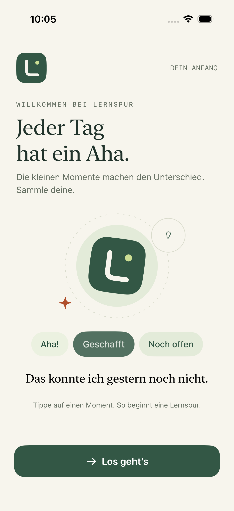
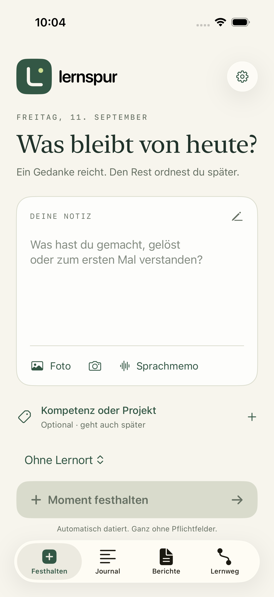
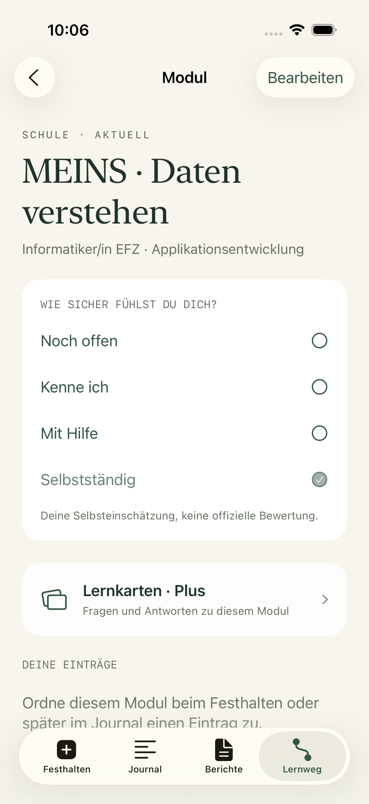
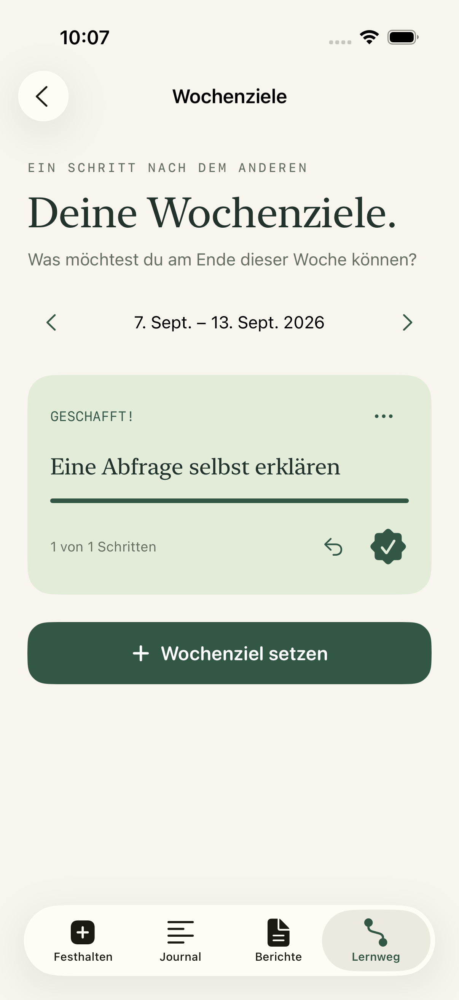
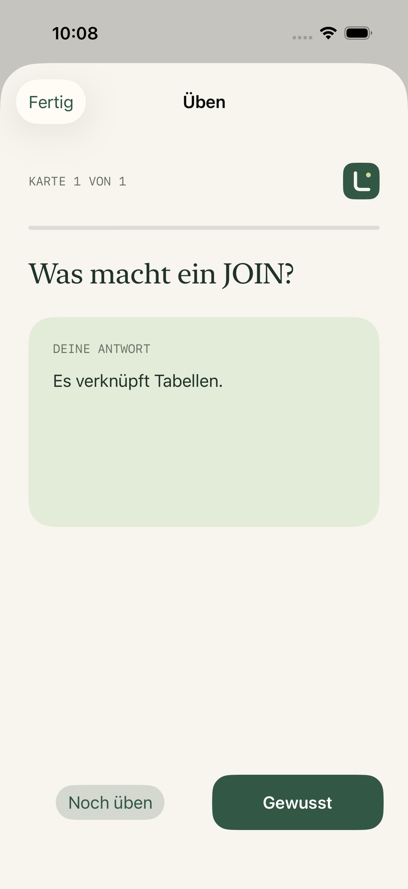
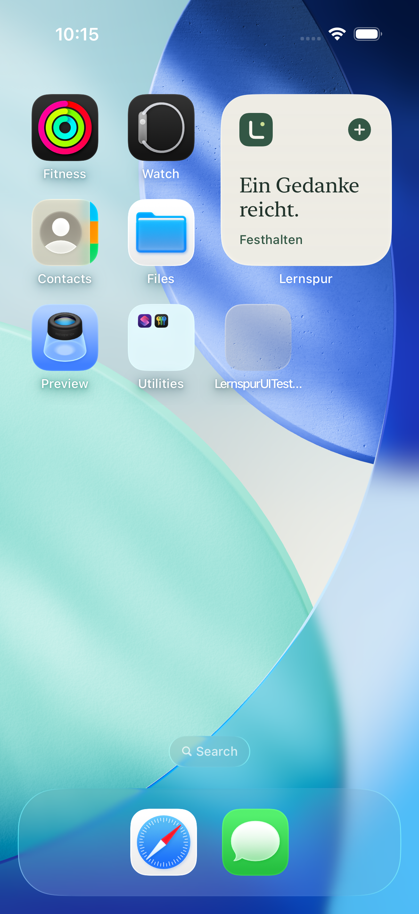
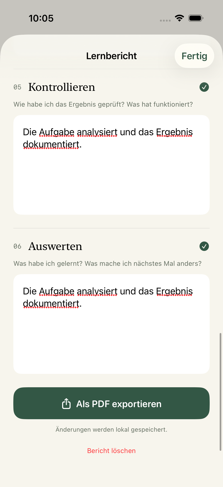

So sieht Lernspur
auf dem iPhone aus.
Lernspur 1.2.0 · Echte Aufnahmen aus der nativen SwiftUI-App im iPhone-Simulator. Mit Wochenzielen, Lernkarten, Homescreen-Widget und lokalem Lernjournal. Alle Inhalte sind fiktive Testbeispiele.







Die interaktive Basis-Demo zeigt Version 1.0 und speichert getrennt im Browser. Die native App 1.2.0 wird als Xcode-Testversion installiert und ist noch nicht im App Store. Plus wird im Test kostenlos aktiviert. Cloud und KI sind nicht verbunden. Offizielle Kompetenzen bleiben klar markierte Demo-Platzhalter.